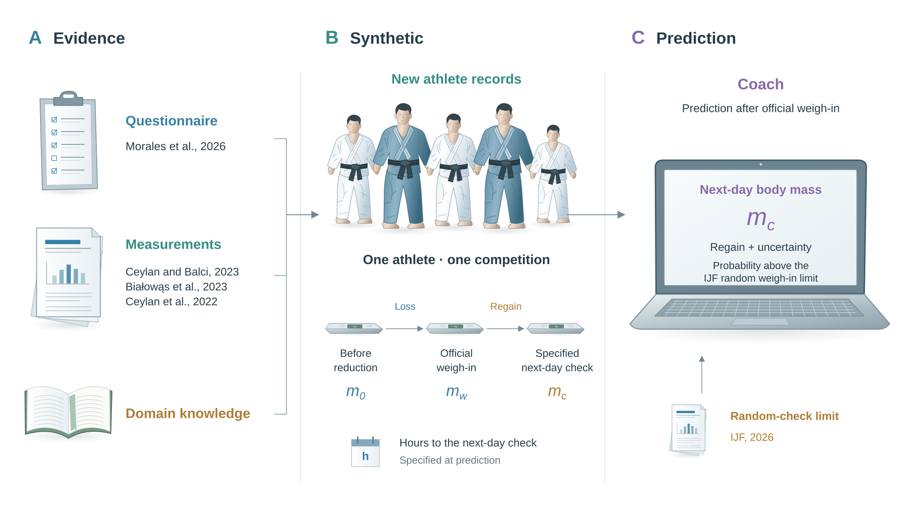

Purpose
Coaches are closely involved in athletes’ weight-management decisions. In a survey of 68 Israeli judo and taekwondo coaches and trainers, 61 reported discussing weight and giving guidance before competition, and personal experience was a prominent source of their advice (Berkovich et al. 2019, 534–36). The paper also describes athletes’ reported reliance on coaches for weight and eating decisions. More recent judo evidence identifies greater perceived coach influence among respondents from the most recent historical competition period (Morales et al. 2026). These findings motivate selecting the coach as the user.
The practical problem is that a coach needs to interpret what an athlete’s weight may be on competition morning, while the available questionnaire records usual loss and following-week regain without linked masses and times for a single competition. This gap prevents those responses from directly answering the next-day question. Published measurements and judo knowledge provide additional evidence for defining the intended use of synthetic competition records.
The application will help judo coaches assess body mass on competition morning after the official weigh-in. It will estimate next-day mass, regain since weigh-in and the probability of exceeding the applicable International Judo Federation (IJF) random weigh-in limit at a specified check time.
Body mass is selected as a deliberate study focus. Narrowing the task makes it easier to identify the relevant evidence and apply judo knowledge to a defined outcome. The intended columns will cover the starting mass, official weigh-in mass, next-day mass, preparation duration, elapsed recovery time and athlete context. Together, they describe the circumstances around that outcome and make the intended task explicit.
A new synthetic population will represent one competition per athlete, informed by compatible questionnaire patterns, published judo measurements and domain knowledge. Its purpose is to provide hypothetical competition records for developing the intended prediction task.
- Operational objective: help coaches estimate body mass at a specified next-day check, the corresponding regain since official weigh-in and the probability of exceeding the applicable random weigh-in limit.
- Research objective: develop an evidence-informed synthetic competition dataset for this prediction task and examine how the framework supports justified design decisions, measurable outcomes and information useful to coaches.
The framework connects the intended user, available evidence and operating conditions to the design decisions (Ruiz Pinto et al. 2026). In this application, its contribution will be examined through the justification of those decisions, task-relevant quantitative outcomes and coach feedback. Together, these forms of evidence will inform refinement of the framework within this use case. Prediction performance and the contribution of the framework will be interpreted separately.
Users
Judo coaches are the primary users. After official weigh-in, the coach enters the athlete’s available measurements and competition context, specifies the intended next-day check time, and reviews the predicted mass and regain alongside the applicable random weigh-in limit. The display must identify the measurement times, units, uncertainty and population supported by the evidence.
The output supports interpretation of expected body mass for the stated context. It does not establish a benefit from changing food, fluid or weight-reduction practices, or provide an individual prescription.
Questions
The four questions below follow the Objective dimension of the published framework (Ruiz Pinto et al. 2026, Table 3). Their answers define why synthetic data are needed, what task they should support and who will use the intended output.
| Question | Answer |
|---|---|
| What limitation in real data are you trying to overcome? | The historical questionnaire lacks linked masses before reduction, at official weigh-in and at a next-day check for one competition, together with their measurement times. It therefore cannot directly support the intended next-day prediction task. |
| What task or application should the synthetic data support? | Support development of next-day body-mass prediction for judo coaches, including the corresponding regain, uncertainty and probability of exceeding the applicable IJF random weigh-in limit at a specified check time. |
| Are you aiming to replace, augment, or stress-test real data? | Construct a new dataset of hypothetical athlete-competition records for model development and exploration of plausible weight-change scenarios. The questionnaire remains reference evidence; generated measurements describe hypothetical competitions. |
| Who are the end users? | Judo coaches who interpret expected competition-morning mass using the athlete’s known measurements and competition context. |
Overview
The diagram follows the objective from evidence to intended use. Panel A brings together the questionnaire, published measurements and domain knowledge. Panel B defines the hypothetical competition records and their measurement stages. Panel C connects the specified next-day check to the coach’s interpretation of mass, regain, uncertainty and the applicable random-check limit.

Evidence
Questionnaire
The data sheet in judo.xlsx contains reviewed questionnaire records, and each row describes a historical response from a former high-level athlete, rather than a dated competition event (Morales et al. 2026; Morales 2025).
R code
# Read the reviewed questionnaire records
inputP <- file.path("data", "judo", "judo.xlsx")
data <- openxlsx::read.xlsx(inputP, sheet = "data", skipEmptyRows = FALSE)
dataThe workbook contains 667 records and 41 study variables. These records provide evidence about reported weight-management patterns.
Measurements
The source definitions establish which reported quantities can inform the intended task. Their original units and time windows remain attached to them.
R code
# Read the source definitions for the weight-management measurements
measures <- c(
"weight_cutting_usuallykg",
"weight_cutting_daysbefore",
"weight_regain_nextweekcomp",
"weight_cutting_maxkg",
"weight_current"
)
sourceP <- file.path("data", "judo", "judoDIC.xlsx")
definitions <- openxlsx::read.xlsx(sourceP, sheet = "dictionary")
definitions <- definitions[
match(measures, definitions$variable),
c("variable", "description", "unit")
]
definitions| Variable | Description | Unit |
|---|---|---|
| weight_cutting_usuallykg | Usual reported body mass lost | kg |
| weight_cutting_daysbefore | Days used to adjust body mass before competition | days |
| weight_regain_nextweekcomp | Body mass regained in the week after competition | kg |
| weight_cutting_maxkg | Maximum reported body mass lost | kg |
| weight_current | Current body mass at the questionnaire | kg |
| Source | Contribution to the objective |
|---|---|
| Usual reported loss and preparation duration | Inform compatible loss and preparation patterns after accounting for the source population and historical context. |
| Maximum reported loss | Describe the largest recalled loss. |
| Following-week regain | Describes a separate historical outcome with a different time window from next-day regain. |
| Current age and body mass | Describe the respondent at the survey, after the competitive career. |
| Historical division | Describes a harmonised category; it does not establish measured weigh-in mass or a current category limit. |
Consequently, competition measurements will be generated in a new dataset. Appending them to the questionnaire would attach assumed event measurements to historical respondents. Variables absent from every source record require auxiliary information or assumptions about their joint relationships, rather than ordinary missing-value imputation (Moretti and Shlomo 2023).
The sources describe different populations and measurement windows. Their summaries do not determine all relationships between the proposed variables. Judo knowledge can help specify those relationships, but each assumption must remain distinguishable from an observed finding.
Population
The synthetic population will follow the ages, sexes, competition levels and measurement settings represented by the studies describing overnight regain. Age will mean age at the represented competition. Numerical age limits will come from reported eligibility criteria or observed ranges; means, standard deviations and confidence intervals do not establish those limits.
| Evidence | Population and measurements | Relevance to the objective |
|---|---|---|
| Ceylan and Balci (2023) | 35 men and 15 women measured at official weigh-in and on competition morning. | Establish that paired weigh-in and competition-morning measurements have been studied in both sexes. |
| Bialowas et al. (2023) | 17 men, mean age 18.8 years with SD 0.5; measurements before the event, at weigh-in and around the competition warm-up. | Provide evidence about mass changes across defined competition stages. |
| Ceylan et al. (2022) | 18 men in weight-loss and control groups, mean ages 19.8 and 19.1 years; a simulated weigh-in followed by 15 hours of recovery. | Provide evidence about a defined overnight recovery interval. |
These studies help define the population and measurement window to which the intended use applies. Neither the historical questionnaire’s full age distribution nor evidence from one group will automatically be transferred to another.
Weight timing
With the population defined, each synthetic record will represent one athlete in one competition and link three mass measurements. Prediction will occur after official weigh-in, using measurements already available and the intended next-day check time. This defines a prediction within one competition, without requiring repeated competitions or season-long athlete monitoring.
| Quantity | Definition | Role |
|---|---|---|
| Starting mass, | Body mass before the defined reduction period, in kg. | Predictor and reference for preceding loss. |
| Official mass, | Recorded body mass at official weigh-in, in kg. | Predictor and reference for regain. |
| Check mass, | Body mass at the specified next-day check, before competing, in kg. | Prediction outcome. |
| Preparation, | Days between the defined start of reduction and official weigh-in. | Predictor. |
| Recovery interval, | Hours between official weigh-in and the intended next-day check. | Predictor defining the horizon. |
| Athlete context | Competition age, sex and event category supported by the selected evidence. | Contextual predictors available at official weigh-in. |
The intended check time defines the prediction horizon. When the next-day mass is observed, its actual measurement time must also be recorded. That mass, the resulting regain and information collected during subsequent recovery are later observations and cannot serve as inputs to the prediction made at official weigh-in (Riley et al. 2024).
A measurement taken five days before competition is not automatically the start of weight reduction. Likewise, mass after a warm-up cannot be treated as an earlier random-check measurement without accounting for that difference. These timing distinctions determine which published measurements address the intended question (Bialowas et al. 2023).
For the new competition records, the linked quantities are:
Here, is the preceding mass loss and is the change after official weigh-in. Positive represents regain; negative represents further loss.
The primary output will be a predicted distribution for . Subtracting the known official mass gives the corresponding regain distribution and preserves its uncertainty.
Regulation
The IJF rules dated 14 August 2026 specify a random weigh-in limit based on the category’s upper limit. The comparison uses the published table, including its rounding and age-category allowances (International Judo Federation 2026, 77–80).
- The official weigh-in is normally held the previous day at 16:00; the event schedule determines the actual elapsed recovery interval.
- Random checks apply to individual events. Four athletes per category are drawn, excluding the plus categories. Mixed-team weigh-in follows separate rules.
- The random-check allowance is 5% above the category’s upper limit, rather than the athlete’s actual official mass. For senior and junior athletes in the -73 kg category, the published threshold is 76.7 kg. Cadet thresholds include the specified underwear allowance.
- The comparison concerns exceeding the applicable limit if checked at the specified time. It does not estimate the probability of selection or disqualification.
The threshold provides a regulatory comparison; it is not a physiological upper bound. Plausible above-limit outcomes must remain possible for the intended exceedance prediction. Regulatory compliance does not establish hydration or physiological recovery (Ceylan and Balci 2023).
Assessment on synthetic records will describe performance under the generation assumptions. Predictive validity for athletes requires independent competition records containing the relevant measured inputs and next-day outcome (Riley et al. 2024). A held-out questionnaire sample cannot provide that evidence because it does not contain the next-day measurement.
Outputs
This document defines the motivation, user, evidence gap and intended task. It retains the questionnaire reference data and source measurement definitions, and presents the four framework answers as a Markdown table. Together, the narrative and diagram specify the intended population, available inputs, prediction horizon and coach-facing outputs.
Workbook
Running the following export updates the objective sheet in judo.xlsx. It preserves the existing questionnaire data sheet, UIDs and any other sheets. The reference definitions remain in judoDIC.xlsx.
| Sheet | Content |
|---|---|
data |
Existing questionnaire records and UIDs. |
objective |
Four framework questions and answers describing the prediction purpose, evidence gap, synthetic role and coach use. |
The export reads the four answers directly from the Questions table so the document and workbook use the same wording.
R code
# Read the four framework answers from the Markdown table
text <- readLines("objectiveJD.Rmd", warn = FALSE, encoding = "UTF-8")
rows <- seq.int(match("## Questions", text) + 1L,
match("## Overview", text) - 1L)
text <- text[rows]
text <- text[grepl("^\\|", text)]
objective <- read.table(text = text, sep = "|", skip = 2,
header = FALSE, quote = "", comment.char = "",
strip.white = TRUE, stringsAsFactors = FALSE)[, 2:3]
names(objective) <- c("question", "answer")
objectiveR code
# Update the objective specification while preserving the other sheets
outputP <- file.path("data", "judo", "judo.xlsx")
workbook <- openxlsx::loadWorkbook(outputP)
if ("objective" %in% names(workbook)) {
openxlsx::removeWorksheet(workbook, "objective")
}
openxlsx::addWorksheet(workbook, "objective")
openxlsx::writeData(workbook, "objective", objective, rowNames = FALSE,
headerStyle = NULL, borders = "none", withFilter = FALSE)
openxlsx::saveWorkbook(workbook, outputP, overwrite = TRUE)
outputP